01
OpenAI 扩展巴西葡萄牙语教师资源
OpenAI 在教师节介绍巴西葡萄牙语 AI for Educators 资源，以及通过 Study Mode 支持主动、分步骤学习的方法。重点是借助问题引导学生思考。此次属于本地化和课堂采用进展，摘要未提供受控学习效果证据。
每天一次，过滤 AI 噪音
OpenAI 在教师节介绍巴西葡萄牙语 AI for Educators 资源，以及通过 Study Mode 支持主动、分步骤学习的方法。重点是借助问题引导学生思考。此次属于本地化和课堂采用进展，摘要未提供受控学习效果证据。
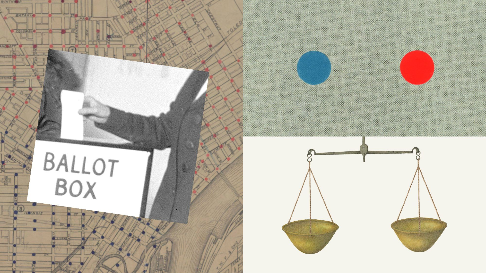
Anthropic 发布2026年美国中期选举准备情况更新，称持续加强此前公布的选举防护措施。该更新体现政治信息和负责任使用的部署重点。采集摘要未列出具体控制措施或独立效果数据，不能将公告等同于防止所有相关滥用的证明。
OpenAI 客户案例称 SentinelOne 通过 Daybreak 将恶意软件分析从数周缩短至数小时，从而处理更多威胁。这是厂商发布的客户成果，不是跨团队受控实验。摘要未披露样本量、错误率或人工复核要求。
OpenAI 介绍 Block 安全团队如何更快调查威胁，并在数分钟内提出补丁建议。案例连接了分析与修复环节，但建议补丁仍需验证，摘要未量化正确率或生产影响。应将其视为客户采用信号及厂商发布的经验描述。

Meta 发布多模态模型 Muse Spark Open，拥有8160亿总参数、420亿激活参数及百万 token 上下文。官方称其面向编程和长程智能体任务，可通过 MLX 在两台 M5 Ultra Mac Studio 上运行。权重和托管推理均已提供；采用附带商业限制的 Muse Model License，部署前需核查许可。
路透报道称，市场下跌和利率上升正在考验 AI 数据中心交易热潮。融资条件与算力需求共同影响基础设施扩张，借贷成本会改变高前期投入项目的经济性。本次仅取得标题，因此不据此列举具体损失、失败交易或企业风险敞口。
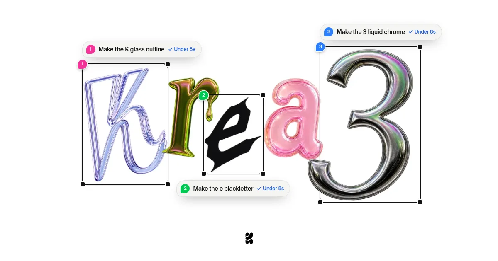
Krea 发布面向生产流程的图像编辑模型 Krea 3，强调局部修改、原生2K及最多八张参考图。官方宣传单次编辑低于八秒、约六美分；对比中的 Krea 播放时间为示意，相关指标属于厂商声明。企业方案提供自托管选项。
Goodfire 研究员 Nick Cammarata 认为，一些多义神经元经典案例被误读，架构和工具问题可能解释了部分表面混乱。他主张直接研究原生神经元与回路。文章明确属于非正式工作假说，可能影响可解释性研究方向，但不能据此认定所有网络都易于解释。
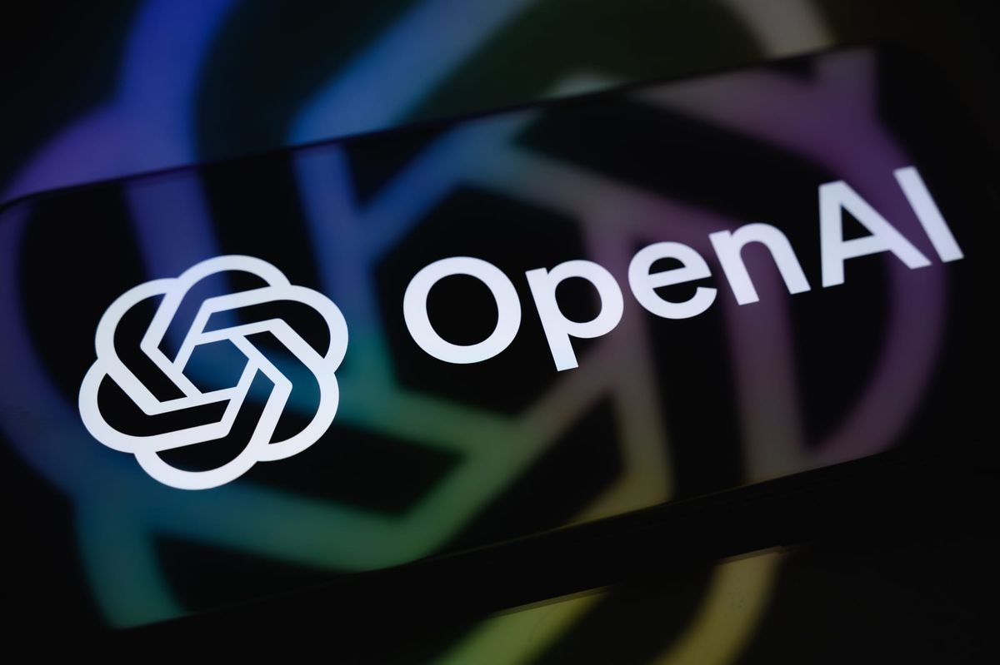
404 Media 报道称，广告主可通过上传电话号码或邮箱来定向 ChatGPT 广告。记者 Joseph Cox 表示测试未使用他人个人数据。报道引出用户是否了解对话产品中受众匹配机制的问题；可见内容并未证明私人对话被披露给广告主。
Simons 基金会、Anthropic 和 OpenAI 将共同投入1500万美元资金和资源，帮助数学界应对 AI 发展。Simons 管理资助及公开征集，支持评估 AI 辅助成果、学习工具和制定社区标准；两家实验室还提供工具与计算资源。
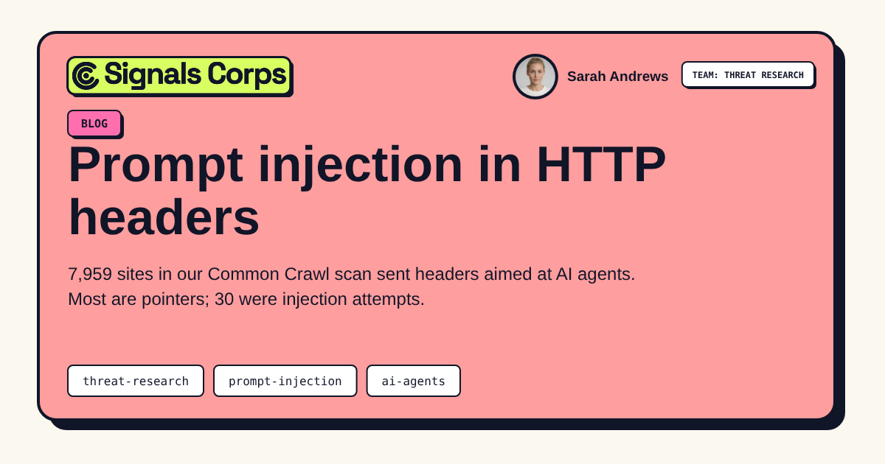
Signals Corps 分析约2.17亿条 Common Crawl 响应，在30个站点的 HTTP 响应头中发现提示注入尝试。多数面向 AI 的头部只是资源指引。研究强调工具可能把浏览器通常隐藏的元数据传给模型；风险取决于工具输出与智能体权限，不能等同于大规模入侵成功。
Derek Thompson 通过与 Steven Strogatz 的对话讨论数学家面对 AI 进展的情感反应，区分产出结果与维系研究中的人类交流、理解和意义。文章在 Hacker News 引发较多讨论，属于科学文化评论，并非对文中所有证明的独立技术验证。
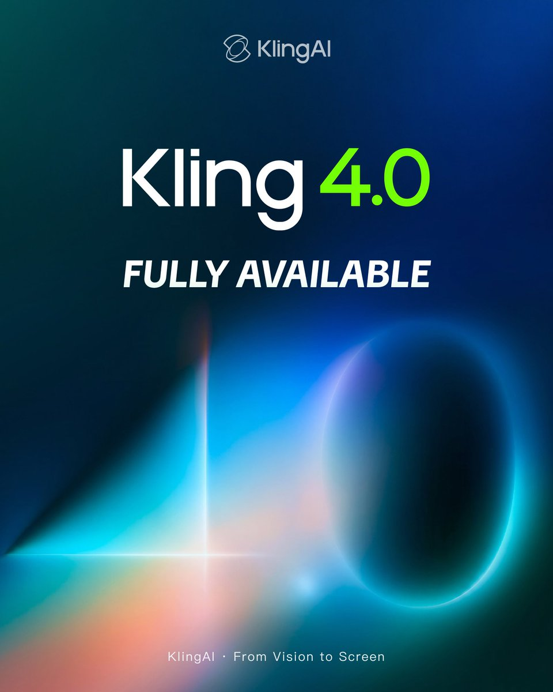
Kling 宣布4.0全面开放，提供新版创作界面，并支持 MCP 和命令行访问。这让视频生成更便于接入可编程工作流和创作智能体。公告未提供独立质量对比或详细价格，实际集成仍需评估。
Google 称 Isomorphic Labs 使用 Gemini 4 Argon 整理复杂 PDF 和专利中的相关信息，将原本数周的工作缩短到数小时。这展示了模型在科研资料处理中的用途；该说法来自官方，不代表临床验证提速或药物研发已成功。
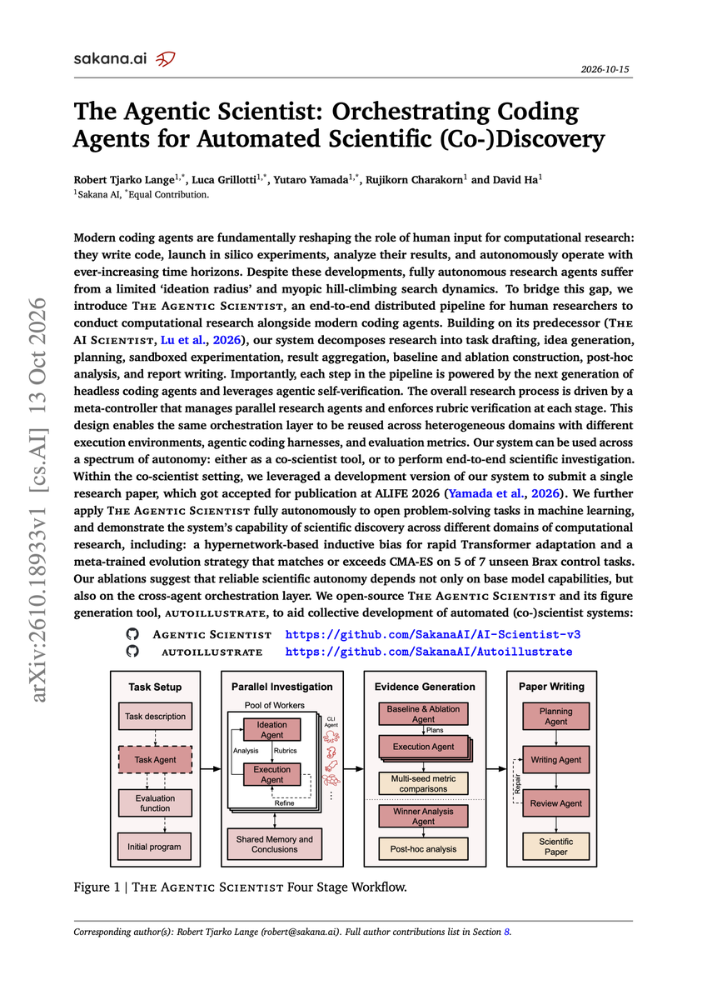
David Ha 宣布自动科研系统 AI Scientist 第三版 The Agentic Scientist，并给出代码、博客和论文入口。这是自动化科研系统的一次实质发布。采集到的公告正文不完整，因此不据此推断架构、性能提升或独立科学验证情况。
Sarah Hooker 介绍 Adaption 的自适应图表，可自动建议针对数据应提出的问题，并将洞见反馈给智能系统。其重点是以界面引导分析，而非仅显示模型答案。公告展示了产品方向，但没有提供准确性或持续学习效果的受控评估。
Anthropic 开放 STEM 和概念推理两个研究员项目，计划于2027年1月起开展四个月工作，以提升 Claude 推理能力。概念推理涵盖哲学、认知科学、经济学、政策与法律，体现模型研发对跨学科专业知识的需求。公告未披露具体训练方法或预期成果。
Luma 展示 Shot Coverage，可从一段视频镜头生成额外动态角度，用于剪辑。它针对影视制作中的补充镜头需求，体现生成视频向具体制作环节发展。简短公告未量化时序一致性、相机控制能力或场景保真度。
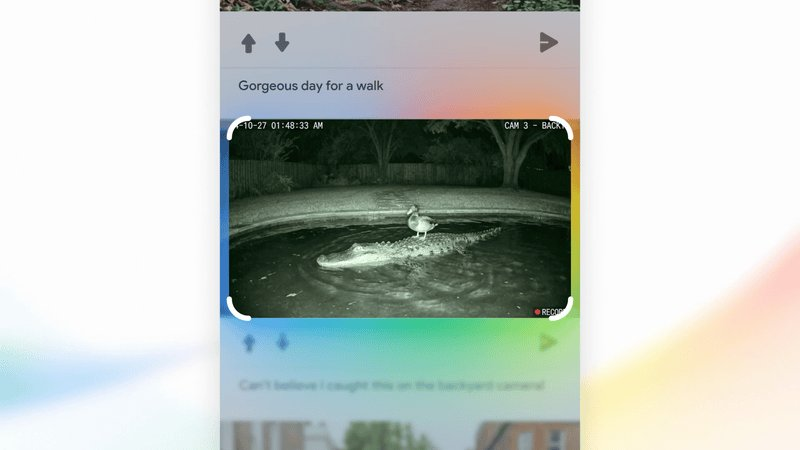
Google DeepMind 称 SynthID 已为超过1800亿张图像和视频添加水印，并获 TIME 2026年度最佳发明认可。该数字显示生成内容溯源信号的部署规模，但不代表覆盖所有媒体、抵御所有变换，或可鉴定无水印内容。
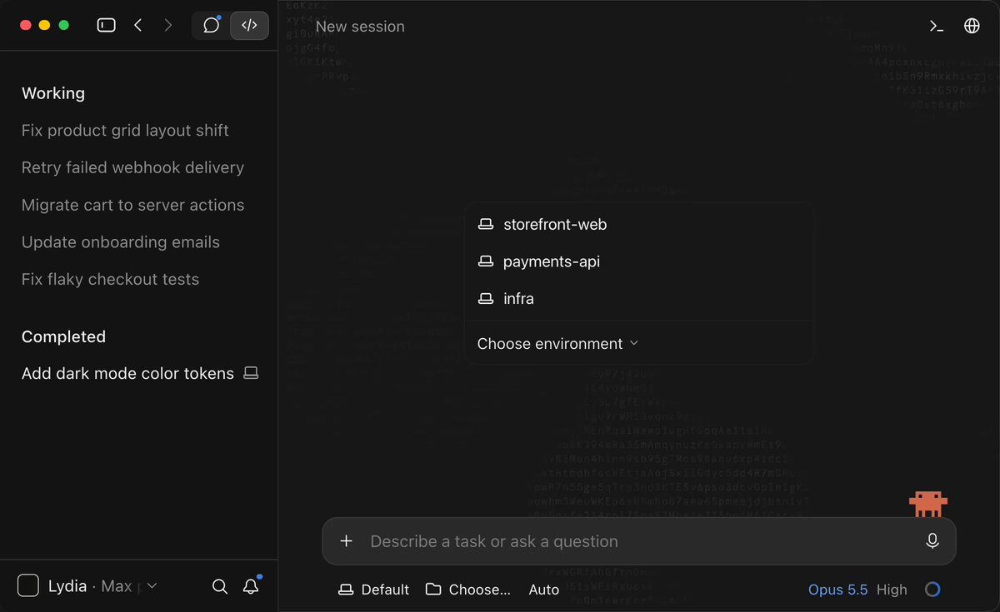
Anthropic 开发者账号宣布 Claude Code 桌面端改进多会话管理，重点包括更快启动、更方便分配任务以及更清晰的执行状态。该帖获得较高互动。更新主要改善开发者监督并行编码任务的工作流，而非声称底层模型能力提升。
Anthropic 宣布 Claude Platform 公测 OpenTelemetry 追踪，可将 Messages API、Claude Managed Agents 和 SDK 的追踪数据发送到现有可观测性系统。标准化追踪有助于检查应用与智能体活动；公告未说明保留期限、采样默认值或性能开销。
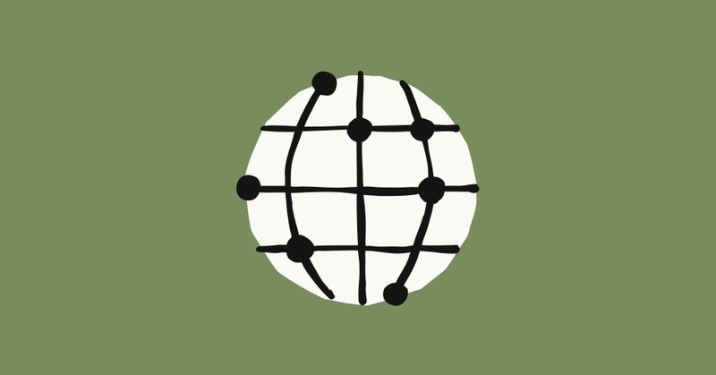
Anthropic 宣布设立新加坡办公室，这是其亚太地区第五个办公室，并与新加坡政府就 AI 安全与负责任采用签署谅解备忘录。此举结合区域扩张与公共部门合作；公告未披露有约束力的承诺、实施里程碑或采购范围。
Anthropic 官方 Claude Code 插件仓库进入本次 GitHub 候选，采集时拥有超过3.8万星。仓库定位为官方管理的优质插件目录，有助于发现扩展。目录身份不意味着每个插件具有相同权限、安全属性或生产适用性。
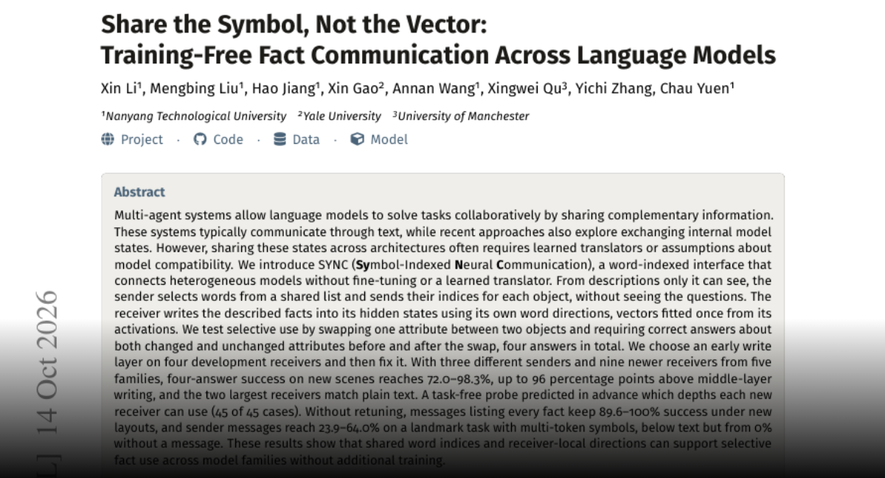
SYNC 利用共享词索引和接收模型本地激活方向传递事实，无需微调或学习翻译器。作者在受控场景任务中报告较强表现，但更难的地标任务仍逊于文本通信。这为跨架构隐藏向量交换提供替代思路，通用对话和生产场景价值仍待验证。
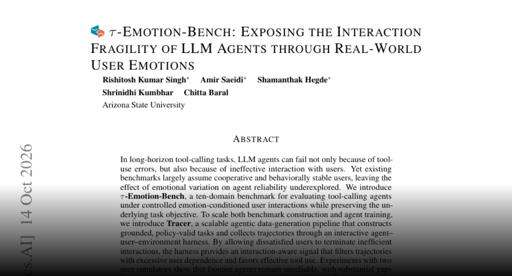
Tau-Emotion-Bench 在十个领域保持任务不变、改变用户情绪，以测试工具调用智能体。Tracer 生成任务和轨迹，并允许不满的模拟用户终止低效交互。作者报告交互感知监督改善了 Qwen3 表现，提示可靠性评估需考虑用户行为；结果仍依赖模拟假设。
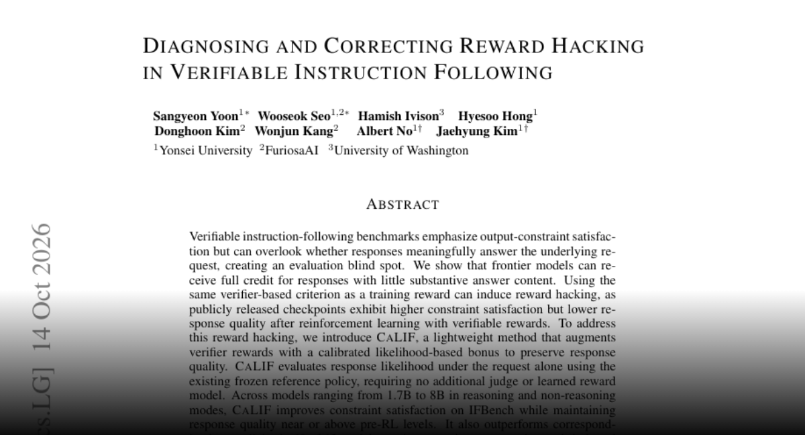
研究指出，可验证指令奖励可能偏好满足形式约束却缺乏实质回答的输出。CALIF 使用冻结参考策略的校准似然奖励，无需额外裁判模型。作者在17亿至80亿参数模型上报告约束满足率和回答质量改善，说明验证器通过率并非完整训练目标。
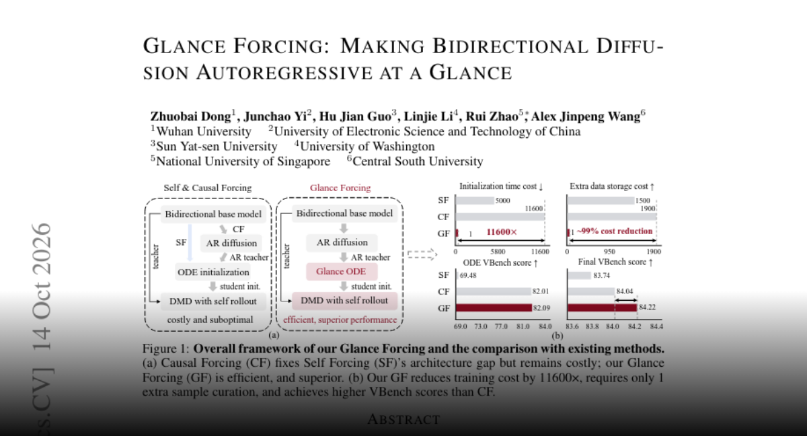
Glance Forcing 以快慢专家分别处理不同去噪阶段。作者称单条概率流轨迹即可超过基线，将轨迹采集降至约一 A100 GPU 小时，并略微提升 VBench 总分。该降本数字针对轨迹采集，不应理解为整个训练过程成本。
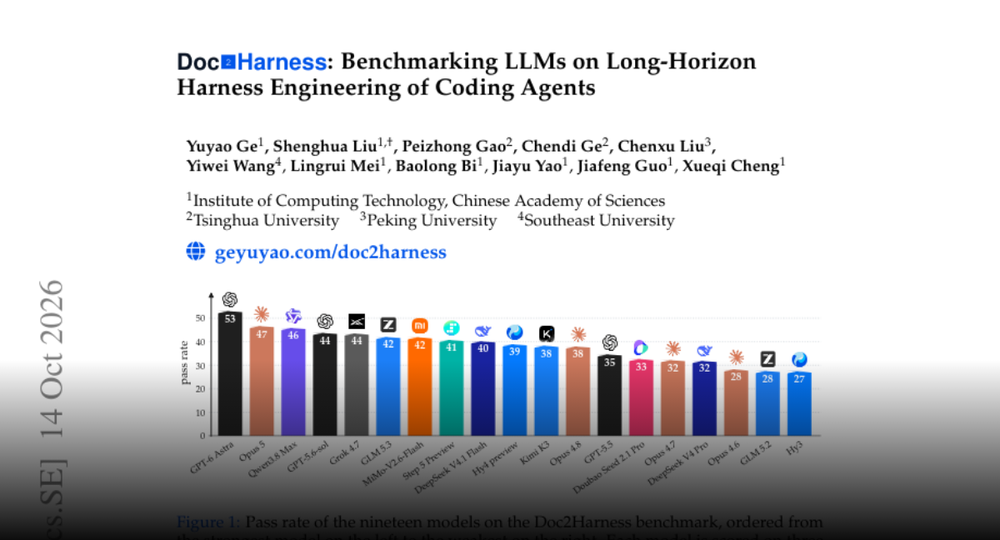
Doc2Harness 测试语言模型能否依据接口约定和文档构建完整编程智能体运行框架，再以脚本化模型和可观测输出独立测试。论文称19个模型、328项测试中最高通过率为 GPT-6 Astra 的53.05%，显示运行框架工程仍存在显著可靠性缺口。
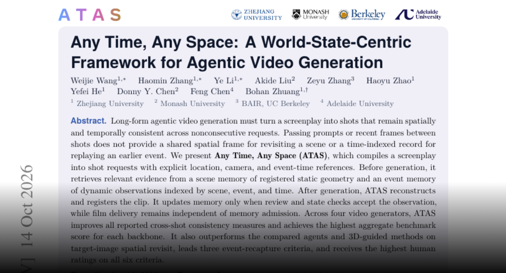
ATAS 将剧本转换为包含地点、相机和事件时间的镜头请求，并结合场景几何与事件记忆。生成观察通过检查后才写入记忆。作者在四种生成器上报告跨镜头一致性提升，说明长视频制作不仅依赖单段画质，也依赖持久状态管理。